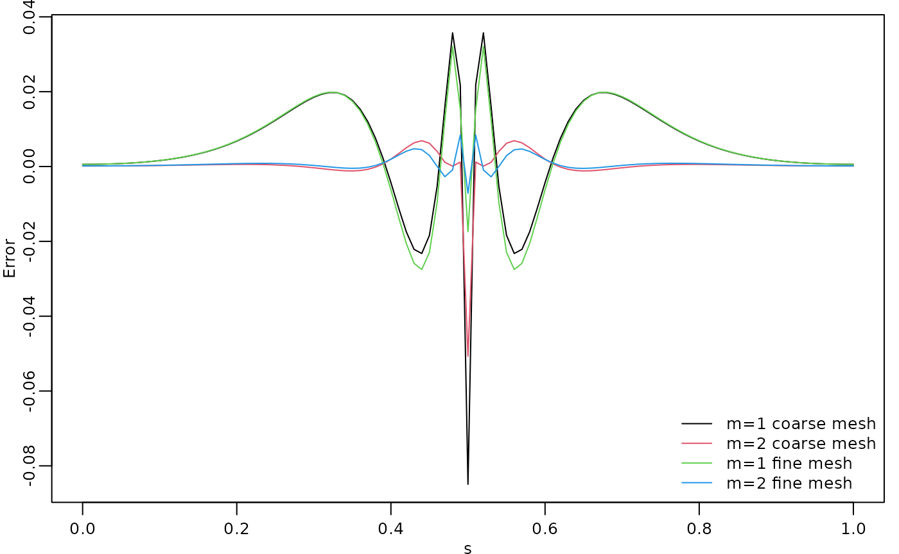
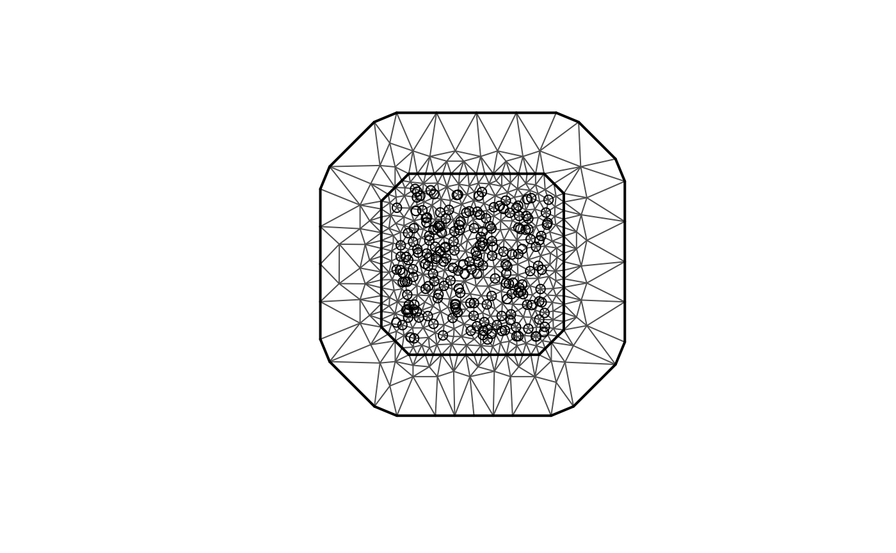

Operator-based rational approximation
David Bolin and Alexandre B. Simas
Created: 2019-08-07. Last modified: 2024-10-22.
Source:vignettes/rspde_base.Rmd
rspde_base.RmdIntroduction
Several popular Gaussian random field models can be represented as solutions to stochastic partial differential equations (SPDEs) of the form
Here is Gaussian white noise, is a second-order differential operator, the fractional power determines the smoothness of , and scales the variance of .
If is an integer and if the domain where the model is defined is bounded, then can be approximated by a Gaussian Markov random field (GMRF) via a finite element method (FEM) for the SPDE. Specifically, the approximation can be written as Here are piecewise linear basis functions defined by some triangulation of and the vector of weights is normally distributed, , where is sparse. See Lindgren, Rue, and Lindström (2011) for further details.
In this vignette we focus on the operator-based rational approximation. This approach, introduced by Bolin and Kirchner (2020), results in an approximation of the original SPDE which is of the form , where and are non-fractional operators defined in terms of polynomials and . The order of is given by and the order of is where is the integer part of if and otherwise.
The combination of the rational approximation of the operator with the FEM discretization yields an approximation of on the basis expansion form above. The difference to the non-fractional case is that the vector of stochastic weights now is where and are sparse matrices. Alternatively, can be represented as where , which means that the discrete approximation is a latent GMRF. This can be used for computationally efficient inference and simulation. See Bolin and Kirchner (2020) for further details.
Using the package to perform operator-based rational approximations
The main purpose of the rSPDE package is to provide
functions for creating the rational approximation. In this vignette we
focus on the operator-based rational approximation, which means
assembling the matrices
and
.
There are three functions for computing the rational approximation. The
most general function is fractional.operators(), which
works for a wide class of models with a general differential operator
.
For the stationary Matérn case, where
,
the function matern.operators() provides a simplified model
specification. For the generalized non-stationary Matérn model, defined
through the SPDE
the function
spde.matern.operators() can be used.
For the alternative covariance-based rational approximation, we refer the reader to the Rational approximation with the rSPDE package vignette. It is worth noting that the covariance-based rational approximation only applies to fractional SPDE models with Gaussian noise, whereas the operator-based rational approximation can be used for more general models such as the models driven by type-G Lévy noise considered in Wallin and Bolin (2015), Bolin (2013), and Asar et al. (2020).
Once the approximation has been constructed, it can be included
manually in statistical models just as for the non-fractional case. The
package has some built-in functions for basic use of the approximation,
such as simulate() which can be applied for simulation of
the field. There are also functions for likelihood evaluation and
kriging prediction for geostatistical models with Gaussian measurement
noise. In the following sections, we illustrate the usage of these
functions.
Constructing the approximation
In this section, we explain how the different main functions can be
used for constructing the rational approximation. The first step for
constructing the rational SPDE approximation is to define the FEM mesh.
In this section, we use the simple FEM implementation in the
rSPDE package for models defined on an interval.
Assume that we want to define a model on the interval . We then start by defining a vector with mesh nodes where the basis functions are centered.
s <- seq(from = 0, to = 1, length.out = 101)Based on these nodes, we use (implicitly) the built-in function
rSPDE.fem1d() to assemble two matrices needed for creating
the approximation of a basic Matérn model. These matrices are the mass
matrix
,
with elements
,
and the stiffness matrix
,
with elements
.
We can now use matern.operators() to construct a
rational SPDE approximation of degree
for a Gaussian random field with a Matérn covariance function on the
interval. Since we are using the operator-based approximation, we must
set type to "operator".
kappa <- 20
sigma <- 2
nu <- 0.8
r <- sqrt(8*nu)/kappa
op <- matern.operators( sigma = sigma,
range = r,
nu = nu,
loc_mesh = s, d = 1, m = 1,
type = "operator",
parameterization = "matern"
)The object op contains the matrices needed for
evaluating the distribution of the stochastic weights
.
If we want to evaluate
at some locations
,
we need to multiply the weights with the basis functions
evaluated at the locations. For this, we can construct the observation
matrix
with elements
,
which links the FEM basis functions to the locations. This matrix can be
constructed using the function rSPDE.A1d().
To evaluate the accuracy of the approximation, let us compute the
covariance function between the process at
and all other locations in s and compare with the true
covariance function, which is the folded Matérn covariance, see Theorem
1 in An explicit link
between Gaussian fields and Gaussian Markov random fields: the
stochastic partial differential equation approach. The covariances
can be calculated as
Here
is an identity matrix since we are evaluating the approximation in the
nodes of the FEM mesh and
is a vector with all basis functions evaluated in
.
This way of computing the covariance is obtained by setting
direct = TRUE in the cov_function_mesh()
function inside the op object:
c.approx <- op$cov_function_mesh(0.5, direct = TRUE)
c.true <- folded.matern.covariance.1d(rep(0.5, length(s)),
abs(s), kappa, nu, sigma)The covariance function and the error compared with the Matérn covariance are shown in the following figure.
opar <- par(
mfrow = c(1, 2), mgp = c(1.3, 0.5, 0),
mar = c(2, 2, 0.5, 0.5) + 0.1
)
plot(s, c.true,
type = "l", ylab = "C(|s-0.5|)", xlab = "s", ylim = c(0, 5),
cex.main = 0.8, cex.axis = 0.8, cex.lab = 0.8
)
lines(s, c.approx, col = 2)
legend("topright",
bty = "n",
legend = c("Matérn", "m=1 rSPDE"),
col = c("black", "red"),
lty = rep(1, 2), ncol = 1,
cex = 0.8
)
plot(s, c.true - c.approx,
type = "l", ylab = "Error", xlab = "s",
cex.main = 0.8, cex.axis = 0.8, cex.lab = 0.8
)
par(opar)
To improve the approximation we can increase the degree of the
polynomials, by increasing
,
and/or increase the number of basis functions used for the FEM
approximation. Let us, as an example, compute the approximation with
using the same mesh, as well as the approximation when we increase the
number of basis functions and use
and
.
We will also load the fmesher package to use the
fm_basis() and fm_mesh_1d() functions to map
between the meshes.
library(fmesher)
op2 <- matern.operators(
range = r, sigma = sigma, nu = nu,
loc_mesh = s, d = 1, m = 2,
type = "operator",
parameterization = "matern"
)
c.approx2 <- op2$cov_function_mesh(0.5, direct = TRUE)
s2 <- seq(from = 0, to = 1, length.out = 501)
fem2 <- rSPDE.fem1d(s2)
op <- matern.operators(
range = r, sigma = sigma, nu = nu,
loc_mesh = s2, d = 1, m = 1,
type = "operator",
parameterization = "matern"
)
mesh_s2 <- fm_mesh_1d(s2)
A <- fm_basis(mesh_s2, s)
c.approx3 <- A %*% op$cov_function_mesh(0.5, direct = TRUE)
op <- matern.operators(
range = r, sigma = sigma, nu = nu,
loc_mesh = s2, d = 1, m = 2,
type = "operator",
parameterization = "matern"
)
c.approx4 <- A %*% op$cov_function_mesh(0.5, direct = TRUE)The resulting errors are shown in the following figure.
opar <- par(mgp = c(1.3, 0.5, 0), mar = c(2, 2, 0.5, 0.5) + 0.1)
plot(s, c.true - c.approx,
type = "l", ylab = "Error", xlab = "s", col = 1,
cex.main = 0.8, cex.axis = 0.8, cex.lab = 0.8
)
lines(s, c.true - c.approx2, col = 2)
lines(s, c.true - c.approx3, col = 3)
lines(s, c.true - c.approx4, col = 4)
legend("bottomright",
bty = "n",
legend = c("m=1 coarse mesh", "m=2 coarse mesh",
"m=1 fine mesh", "m=2 fine mesh"),
col = c(1, 2, 3, 4),
lty = rep(1, 2), ncol = 1,
cex = 0.8
)
par(opar)
Since the error induced by the rational approximation decreases exponentially in , there is rarely a need for an approximation with a large value of . This is good because the number of non-zero elements in and increases with , which makes the approximation more computationally costly to use. Further, the condition numbers of and increase with , which can cause numerical problems when working with these matrices. To illustrate this, let us compute the norm of the approximation error for different .
# Mapping s2 to s
A <- fm_basis(mesh_s2, s)
errors <- rep(0, 4)
for (i in 1:4) {
op <- matern.operators(
range = r, sigma = sigma, nu = nu,
loc_mesh = s2, d = 1, m = i,
type = "operator",
parameterization = "matern"
)
c.app <- A %*% op$cov_function_mesh(0.5, direct = TRUE)
errors[i] <- norm(c.true - c.app)
}
print(errors)
#> [1] 1.0113068 0.1100836 576.3166935 54.6482253We see that, when we used the direct method to compute the covariance function, as described above, the error decreases when increasing from to , but is very large for and . The reason for this is not that the approximation is bad, but that the numerical accuracy of the product is low due to the large condition numbers of the matrices.
It is important to note that the alternative covariance-based rational approximation is more numerically stable. The main reason for this is that it relies on a decomposition of the field into a sum of random fields, which removes the need of computing higher order finite element matrices for large values of . See the Rational approximation with the rSPDE package vignette for further details.
To handle this issue for the operator-based rational approximation,
the package contains functions for performing operations such as
or
that takes advantage of the structure of
to avoid numerical instabilities. A complete list of these function can
be seen by typing ?operator.operations. One of these
functions is Sigma.mult(), which performs the
multiplication
in a more numerically stable way. Let us use this function to compute
the errors of the approximations again to see that we indeed get better
approximations as
increases. This is obtained by setting the direct argument
in cov_function_mesh() to FALSE:
errors2 <- rep(0, 4)
for (i in 1:4) {
op <- matern.operators(
range = r, sigma = sigma, nu = nu,
loc_mesh = s2, d = 1, m = i,
type = "operator",
parameterization = "matern"
)
c.app <- A %*% op$cov_function_mesh(0.5, direct = FALSE)
errors2[i] <- norm(c.true - c.app)
}
print(errors2)
#> [1] 1.01130750 0.10425661 0.02356591 0.01717388A non-stationary model
Let us now examine a non-stationary model
with
and
.
We can then use spde.matern.operators() to create the
rational approximation with
as follows.
s <- seq(from = 0, to = 1, length.out = 501)
s_mesh <- fm_mesh_1d(s)
kappa <- 10 * (1 + 2 * s^2)
tau <- 0.1 * (1 - 0.7 * s^2)
op <- spde.matern.operators(
kappa = kappa, tau = tau, nu = nu,
d = 1, m = 1, mesh = s_mesh,
type = "operator",
parameterization = "matern"
)Let us compute the covariance function of the non-stationary model for the locations and .
v <- t(op$make_A(c(0.1, 0.5, 0.9)))
covs <- Sigma.mult(op, v)The three covariances are shown in the following figure.
opar <- par(mgp = c(1.3, 0.5, 0), mar = c(2, 2, 0.5, 0.5) + 0.1)
plot(s, covs[, 1],
type = "l", ylab = "C(s,s_i)", xlab = "s",
cex.main = 0.8, cex.axis = 0.8, cex.lab = 0.8
)
lines(s, covs[, 2], col = 2)
lines(s, covs[, 3], col = 3)
par(opar)
We see that this choice of
and
results in a model with longer range for small values of
and smaller variance in the middle of the domain. We can also apply the
general function fractional.operators() to construct the
approximation. This function requires that the user supplies a
discretization of the non-fractional operator
,
as well as a scaling factor
which is a lower bound for the smallest eigenvalue of
.
In our case we have
,
and the eigenvalues of this operator is bounded from below by
.
We compute this constant and the discrete operator.
fem <- fm_fem(s_mesh)
C <- fem$c0
G <- fem$g1
c <- min(kappa)^2
L <- G + C %*% Diagonal(501, kappa^2)Another difference between fractional.operators() and
the previous functions for constructing the approximation, is that it
requires specifying
instead of the smoothness parameter
for the Matérn covariance. These two parameters are related as
.
op <- fractional.operators(
L = L, beta = (nu + 1 / 2) / 2, C = C,
scale.factor = c, tau = tau, m = 1
)Let’s make sure that we have the same approximation by comparing the previously computed covariances.
covs2 <- Sigma.mult(op, v)
norm(covs - covs2)
#> [1] 0Obviously, it is simpler to use spde.matern.operators()
in this case, but the advantage with fractional.operators()
is that it also can be used for other more general models such as one
with
for some matrix-valued function
.
Using the approximation
For any approximation, constructed using the functions
fractional.operators(), matern.operators(), or
spde.matern.operators(), we can simulate from the model
using simulate().
u <- simulate(op)There is also built-in support for kriging prediction. To illustrate this, we use the simulation to create some noisy observations of the process. For this, we first construct the observation matrix linking the FEM basis functions to the locations where we want to simulate. We first randomly generate some observation locations and then construct the matrix.
We now generate the observations as , where is Gaussian measurement noise.
Finally, we compute the kriging prediction of the process
at the locations in s based on these observations. To
specify which locations that should be predicted, the argument
Aprd is used. This argument should be an observation matrix
that links the mesh locations to the prediction locations.
The process simulation, the observed data, and the kriging prediction are shown in the following figure.
opar <- par(mgp = c(1.3, 0.5, 0), mar = c(2, 2, 0.5, 0.5) + 0.1)
plot(obs.loc, Y,
ylab = "u(s)", xlab = "s",
ylim = c(min(c(min(u), min(Y))), max(c(max(u), max(Y)))),
cex.main = 0.8, cex.axis = 0.8, cex.lab = 0.8
)
lines(s, u)
lines(s, u.krig$mean, col = 2)
par(opar)
Spatial data and parameter estimation
The functions used in the previous examples also work for spatial
models. We then need to construct a mesh over the domain of interest and
then compute the matrices needed to define the operator. These tasks can
be performed, for example, using the fmesher package. Let
us start by defining a mesh over
and compute the mass and stiffness matrices for that mesh.
library(fmesher)
m <- 200
loc_2d_mesh <- matrix(runif(m * 2), m, 2)
mesh_2d <- fm_mesh_2d(
loc = loc_2d_mesh,
cutoff = 0.05,
offset = c(0.1, 0.4),
max.edge = c(0.05, 0.5)
)
plot(mesh_2d, main = "")
points(loc_2d_mesh[, 1], loc_2d_mesh[, 2]) We can now use these matrices to define a rational SPDE approximation of degree for a Matérn model in the same was as before. To illustrate this, we simulate a latent process with standard deviation and range . We choose so that the model corresponds to a Gaussian process with an exponential covariance function.
nu <- 0.8
sigma <- 1.3
range <- 0.15
op <- matern.operators(range = range, sigma = sigma,
nu = nu, m = 2, mesh = mesh_2d,
parameterization = "matern")Now let us simulate some noisy data that we will use to estimate the
parameters of the model. To construct the observation matrix, we use the
fmesher function fm_basis(). We sample 30
replicates of the latent field.
n.rep <- 30
u <- simulate(op, nsim = n.rep)
A <- fm_basis(
x = mesh_2d,
loc = loc_2d_mesh
)
sigma.e <- 0.1
Y <- A %*% u + matrix(rnorm(m * n.rep), ncol = n.rep) * sigma.eThe first replicate of the simulated random field as well as the observation locations are shown in the following figure.
library(viridis)
library(ggplot2)
proj <- fm_evaluator(mesh_2d, dims = c(70, 70))
df_field <- data.frame(x = proj$lattice$loc[,1],
y = proj$lattice$loc[,2],
field = as.vector(fm_evaluate(proj,
field = as.vector(u[, 1]))),
type = "field")
df_loc <- data.frame(x = loc_2d_mesh[, 1],
y = loc_2d_mesh[, 2],
field = as.vector(Y[,1]),
type = "locations")
df_plot <- rbind(df_field, df_loc)
ggplot(df_plot) + aes(x = x, y = y, fill = field) +
facet_wrap(~type) + xlim(0,1) + ylim(0,1) +
geom_raster(data = df_field) +
geom_point(data = df_loc, aes(colour = field),
show.legend = FALSE) +
scale_fill_viridis() + scale_colour_viridis()
For each type of rational approximation of degree
,
there is a corresponding likelihood function that can be used for
likelihood-based parameter estimation. Since we constructed the model
with spde.matern.operators(), we can use the function
spde.matern.loglike() to define the likelihood. To simplify
parameter estimation, we create an object containing the
rSPDE model (we are assigning the meaningless value 1 for
the parameters because they will not be used):
op_obj <- matern.operators( m = 1,
type = "operator", mesh = mesh_2d
)Now, we set up a vector with the response variables and create an
auxiliary replicates vector, repl, that contains the
indexes of the replicates of each observation. Then, we build the
data.frame(), that also contanis the spatial locations, and
we fit the model:
y_vec <- as.vector(Y)
repl <- rep(1:n.rep, each = m)
df_data_2d <- data.frame(y = y_vec, x_coord = loc_2d_mesh[,1],
y_coord = loc_2d_mesh[,2])We can now fit the model (and speed up by setting
parallel to TRUE):
fit_2d <- rspde_lme(y ~ -1, model = op_obj,
data = df_data_2d, repl = repl,
loc = c("x_coord", "y_coord"),
parallel = TRUE)Let us see a summary of the fitted model:
summary(fit_2d)
#>
#> Latent model - Whittle-Matern
#>
#> Call:
#> rspde_lme(formula = y ~ -1, loc = c("x_coord", "y_coord"), data = df_data_2d,
#> model = op_obj, repl = repl, parallel = TRUE)
#>
#> No fixed effects.
#>
#> Random effects:
#> Estimate Std.error z-value
#> alpha 1.92125 0.18468 10.403
#> tau 0.01593 0.01123 1.418
#> kappa 18.13701 1.95054 9.298
#>
#> Random effects (Matern parameterization):
#> Estimate Std.error z-value
#> nu 0.921254 0.184680 4.988
#> sigma 1.277775 0.016117 79.282
#> range 0.149682 0.004527 33.064
#>
#> Measurement error:
#> Estimate Std.error z-value
#> std. dev 0.100474 0.002503 40.14
#> ---
#> Signif. codes: 0 '***' 0.001 '**' 0.01 '*' 0.05 '.' 0.1 ' ' 1
#>
#> Log-Likelihood: -5833.811
#> Number of function calls by 'optim' = 57
#> Optimization method used in 'optim' = L-BFGS-B
#>
#> Time used to: fit the model = 1.05299 mins
#> set up the parallelization = 2.38388 secsand glance:
glance(fit_2d)
#> # A tibble: 1 × 9
#> nobs sigma logLik AIC BIC deviance df.residual model alpha
#> <int> <dbl> <dbl> <dbl> <dbl> <dbl> <dbl> <chr> <dbl>
#> 1 6000 0.100 -5834. 11676. 11702. 11668. 5996 Matern approximat… 1.92Let us compare the estimated results with the true values:
print(data.frame(
sigma = c(sigma, fit_2d$matern_coeff$random_effects[2]),
range = c(range, fit_2d$matern_coeff$random_effects[3]),
nu = c(nu, fit_2d$matern_coeff$random_effects[1]),
row.names = c("Truth", "Estimates")
))
#> sigma range nu
#> Truth 1.300000 0.1500000 0.8000000
#> Estimates 1.277775 0.1496818 0.9212538
# Total time
print(fit_2d$fitting_time)
#> Time difference of 1.052997 minsFinally, we observe that we can use the rational.order()
function, to check the order of the rational approximation of the
rSPDE object, as well as to use the
rational.order<-() function to assign new orders:
rational.order(op_obj)
#> [1] 1
rational.order(op_obj) <- 2Let us fit again and check the results:
fit_2d <- rspde_lme(y ~ -1, model = op_obj,
data = df_data_2d, repl = repl,
loc = c("x_coord", "y_coord"),
parallel = TRUE)Let us check the summary:
summary(fit_2d)
#>
#> Latent model - Whittle-Matern
#>
#> Call:
#> rspde_lme(formula = y ~ -1, loc = c("x_coord", "y_coord"), data = df_data_2d,
#> model = op_obj, repl = repl, parallel = TRUE)
#>
#> No fixed effects.
#>
#> Random effects:
#> Estimate Std.error z-value
#> alpha 1.89726 0.19695 9.633
#> tau 0.01756 0.01349 1.302
#> kappa 17.81474 2.33209 7.639
#>
#> Random effects (Matern parameterization):
#> Estimate Std.error z-value
#> nu 0.897264 0.196952 4.556
#> sigma 1.279910 0.016123 79.384
#> range 0.150392 0.004597 32.713
#>
#> Measurement error:
#> Estimate Std.error z-value
#> std. dev 0.100452 0.002503 40.13
#> ---
#> Signif. codes: 0 '***' 0.001 '**' 0.01 '*' 0.05 '.' 0.1 ' ' 1
#>
#> Log-Likelihood: -5833.769
#> Number of function calls by 'optim' = 93
#> Optimization method used in 'optim' = L-BFGS-B
#>
#> Time used to: fit the model = 2.92019 mins
#> set up the parallelization = 2.30746 secsLet us compare the estimated results with the true values:
print(data.frame(
sigma = c(sigma, fit_2d$matern_coeff$random_effects[2]),
range = c(range, fit_2d$matern_coeff$random_effects[3]),
nu = c(nu, fit_2d$matern_coeff$random_effects[1]),
row.names = c("Truth", "Estimates")
))
#> sigma range nu
#> Truth 1.30000 0.1500000 0.8000000
#> Estimates 1.27991 0.1503923 0.8972638
# Total time
print(fit_2d$fitting_time)
#> Time difference of 2.920194 mins